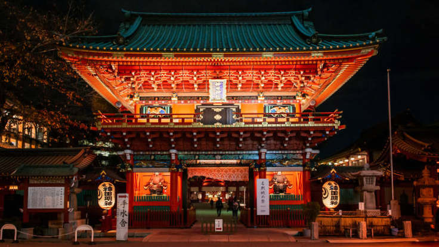
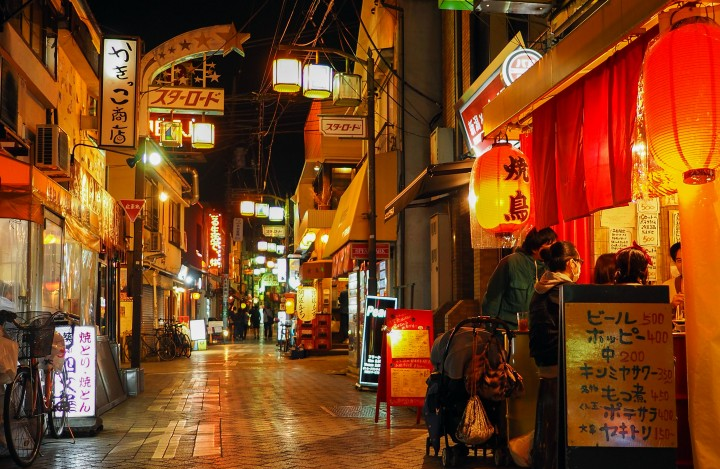
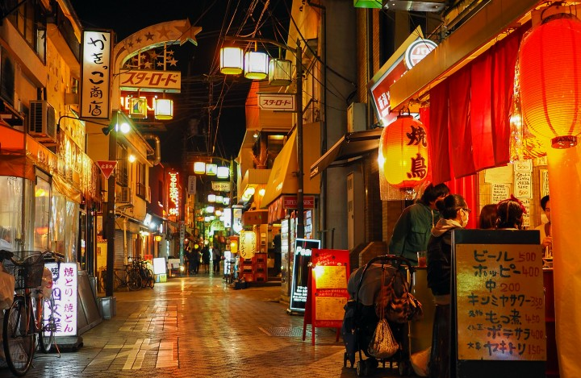

Shibuya
Shibuya, localizado em Tokyo, Japão, é um distrito conhecido por sua moda influente, vida noturna animada e pela icônica interseção de pedestres em frente à estação de trem. É um centro de cultura jovem e tendências urbanas, com uma variedade de lojas de moda, boutiques exclusivas e uma cena gastronômica diversificada que atrai tanto moradores quanto visitantes internacionais. Shibuya oferece uma rica experiência de entretenimento, incluindo uma ampla seleção de bares, clubes e espaços de diversão noturna, refletindo a energia dinâmica e a vitalidade pulsante de Tokyo, tornando-o um destino essencial para explorar a vida urbana japonesa.

Harajuku
Harajuku é um bairro icônico de Shibuya - Tóquio, famoso por sua atmosfera jovem e vibrante e sua cena de moda excêntrica. Um dos pontos mais populares de Harajuku é a Takeshita Street, uma rua estreita e movimentada repleta de lojas de moda, boutiques únicas, cafés temáticos e quiosques de comida de rua. Takeshita Street é um verdadeiro paraíso para os fashionistas e curiosos em busca das últimas tendências da moda urbana. Além disso, Harajuku abriga o sereno Santuário Meiji, um dos santuários xintoístas mais importantes de Tóquio. Cercado por uma vasta floresta, o santuário oferece um refúgio tranquilo do ritmo frenético da cidade, onde os visitantes podem apreciar a beleza natural e a arquitetura tradicional japonesa. Harajuku, com seu contraste de modernidade e tradição, é um destino imperdível para quem visita Tóquio.
Shinjuku
Shinjuku é um distrito dinâmico e multifacetado localizado no coração de Tokyo, Japão, conhecido por sua agitada vida noturna, ampla variedade de lojas e arranha-céus imponentes. É um dos centros comerciais e de entretenimento mais vibrantes da cidade. Shinjuku abriga o Parque Nacional Shinjuku Gyoen, um oásis de tranquilidade com jardins japoneses, britânicos e franceses. O distrito também é famoso pela sua estação ferroviária, uma das mais movimentadas do mundo, conectando várias linhas de metrô e trens de todo o país. Além disso, Shinjuku é lar de Kabukicho, um bairro conhecido por suas luzes neon, bares, clubes e restaurantes que operam até tarde da noite, atraindo tanto locais quanto visitantes internacionais em busca de entretenimento noturno.
Okubo
Okubo


Chuo
Chuo, um distrito central de Tóquio, é conhecido por abrigar algumas das áreas mais emblemáticas da cidade, como Ginza e Tsukiji. Ginza é sinônimo de luxo e sofisticação, repleto de lojas de moda internacional, joalherias e galerias de arte. Este bairro é frequentemente comparado à Quinta Avenida em Nova York e a Champs-Élysées em Paris, devido à sua atmosfera cosmopolita e elegante. A poucos quilômetros de Ginza, o Tsukiji Fish Market, maior mercado de peixe do mundo, possui uma área externa com restaurantes, onde é possível provar frutos do mar frescos e pratos tradicionais japoneses.
Akihabara
Akihabara, também conhecido como Akiba, é um distrito situado no centro de Tokyo, Japão, famoso por sua vibrante cultura otaku e por ser um paraíso para os entusiastas de eletrônicos e produtos tecnológicos. É especialmente conhecido por suas numerosas lojas de eletrônicos, que oferecem uma vasta gama de produtos como computadores, gadgets, jogos e componentes eletrônicos. Ademais, Akihabara é um centro de cultura pop, com lojas de quadrinhos, anime, cosplay e cafés temáticos, onde os visitantes podem experimentar interações únicas com personagens fictícios. A área também possui uma rica história, tendo sido um importante centro comercial desde o período pós-guerra.
Asakusa
Asakusa é um distrito histórico localizado na região de Taito, em Tokyo, Japão, conhecido por seu caráter tradicional e seus importantes locais culturais. O principal ponto de interesse em Asakusa é o Sensō-ji, o templo mais antigo e um dos mais venerados de Tokyo, dedicado à deusa Kannon. A área ao redor do templo, conhecida como Nakamise-dori, é uma rua comercial repleta de lojas que vendem lembranças, doces tradicionais e outros produtos típicos japoneses. Além do Sensō-ji, Asakusa é famosa pelo seu festival anual, o Sanja Matsuri, um dos maiores festivais de rua de Tokyo, celebrando a cultura e tradições locais. Asakusa também oferece vistas pitorescas do rio Sumida, onde passeios de barco são populares, proporcionando uma perspectiva única da cidade.
Ueno
Ueno é um distrito localizado na área de Taito, em Tokyo, Japão, conhecido por ser um importante centro cultural e histórico da cidade. O bairro é mais famoso por abrigar o Parque Ueno, um dos maiores e mais antigos parques de Tokyo, que oferece uma vasta área verde, lagos, templos e o famoso zoológico de Ueno. Além do parque, Ueno é lar de diversos museus de renome, como o Museu Nacional de Tokyo, o Museu Nacional de Arte Ocidental e o Museu Nacional de Ciência Emergente e Inovação (Miraikan). A região também é conhecida por suas ruas comerciais animadas, oferecendo uma variedade de lojas, restaurantes e cafés que atraem tanto moradores quanto turistas.
Bunkyō
Bunkyō
Kagurazaka
Kagurazaka


Minato
Minato é um sofisticado distrito localizado no sul de Tóquio, conhecido por seu ambiente moderno e áreas comerciais de alto padrão. Uma das principais atrações de Minato é a Tokyo Tower, um icônico ponto de observação que oferece vistas panorâmicas deslumbrantes da cidade. O distrito também é famoso por Roppongi, uma área animada com uma vida noturna agitada, restaurantes de renome e galerias de arte. Minato abriga o Templo Zojoji, um templo histórico com uma impressionante arquitetura tradicional e belos jardins, proporcionando um contraste sereno com o agito urbano.
Meguro
Meguro é um elegante distrito localizado no sudoeste de Tóquio, conhecido por suas áreas residenciais sofisticadas e atmosfera relaxada. Uma das áreas mais notáveis de Meguro é por onde passa o rio Meguro, especialmente popular durante a temporada de sakura, quando as cerejeiras em flor criam um cenário deslumbrante ao longo do rio. O distrito também abriga o Yutenji Temple, um templo histórico com uma rica arquitetura e jardins tranquilos. Meguro é famoso por sua cena gastronômica diversificada, com uma ampla variedade de restaurantes e cafés que atraem gourmets de toda a cidade. O distrito é conhecido também por suas galerias de arte e boutiques elegantes. Com uma combinação de charme urbano e tranquilidade, Meguro é um destino ideal para quem deseja explorar uma faceta mais serena e sofisticada de Tóquio.
Setagaya
Setagaya é um extenso distrito localizado no sudoeste de Tóquio, conhecido por suas áreas residenciais tranquilas e espaços verdes abundantes. Uma das áreas mais notáveis de Setagaya é Shimokitazawa, um bairro famoso por sua cena alternativa, com lojas de moda vintage, cafés únicos e locais de música ao vivo. O distrito também é lar do belo Parque de Setagaya, ideal para passeios tranquilos e atividades ao ar livre. Setagaya é famoso por suas ruas arborizadas e uma atmosfera que combina o charme de um bairro tradicional com a energia da vida urbana. Abriga também templos históricos como Gōtokuji, conhecido por suas inúmeras estátuas de gatos da sorte. Com uma mistura de cultura, natureza e estilo de vida relaxado, Setagaya oferece uma experiência única e encantadora em Tóquio.
Ikebukuro
Ikebukuro é um dos principais centros comerciais e de entretenimento de Tóquio, localizado no distrito de Toshima. Conhecido por sua movimentada estação de trem, que é uma das mais frequentadas do mundo, Ikebukuro é um destino popular para compras e lazer. A região abriga grandes lojas de departamento, como Seibu e Tobu, além do Sunshine City, um complexo que inclui shopping, aquário, planetário e o famoso observatório Sunshine 60. Ikebukuro também é um ponto de encontro para amantes de cultura pop, com várias lojas especializadas em anime e mangá. A mistura de modernidade e uma atmosfera jovem faz de Ikebukuro um lugar único de Tóquio.
Sugamo
Sugamo é um bairro tranquilo também localizado no distrito de Toshima, Tóquio. É muitas vezes chamado de "Harajuku das vovós" por sua popularidade entre os idosos. Conhecido por sua rua comercial Jizo-dori, o bairro é um destino famoso para quem busca produtos tradicionais, roupas confortáveis e alimentos típicos do Japão. A área também abriga o Templo Koganji, famoso pela estátua de Togenuki Jizo, que atrai visitantes em busca de cura e bênçãos. Sugamo oferece um ambiente acolhedor e nostálgico, proporcionando uma experiência única que combina tradição e simplicidade em meio à metrópole de Tóquio.
Nakano
Nakano é um distrito localizado no oeste de Tóquio, famoso por sua combinação de cultura pop, comércio diversificado e tranquilidade. O Nakano Broadway é a principal atração, um complexo de shopping famoso por suas lojas especializadas em anime, mangá e produtos colecionáveis. Nakano é conhecido por suas ruas comerciais animadas, repletas de restaurantes, cafés e lojas de moda, que atraem tanto residentes locais quanto visitantes. Além disso, o Templo Zenjōji, com sua arquitetura tradicional e ambiente sereno, é um ponto de interesse cultural.
Suginami
Suginami, um distrito residencial e tranquilo de Tóquio, é conhecido por seu ambiente acolhedor e suas áreas verdes. Apesar de sua atmosfera serena, Suginami abriga bairros vibrantes como Kōenji e Asagaya, famosos por suas cenas musicais e culturais. Kōenji é um centro para a música indie e o vintage, com muitas lojas de discos, boutiques de roupas e bares alternativos. É famoso pelo Junjō Shotengai, uma charmosa rua comercial repleta de lojas tradicionais e restaurantes, proporcionando uma autêntica experiência de compras e culinária japonesa. Asagaya, por sua vez, é renomada pelo Festival Tanabata, que transforma suas ruas em um espetáculo de cores e lanternas.
 

Musashino
Musashino é um encantador distrito localizado a oeste de Tóquio, conhecido por seu ambiente tranquilo e atmosfera acolhedora. A área mais famosa de Musashino é Kichijoji, um dos bairros mais desejáveis para se viver na capital japonesa. Musashino é reconhecido por suas ruas comerciais, como a Sun Road e Harmonica Yokocho, que oferecem uma variedade de lojas, cafés e restaurantes encantadores. Além disso, Musashino possui uma forte cena cultural, com teatros, galerias de arte e locais de música ao vivo que atraem uma grande diversidade de públicos. Com sua combinação de natureza, cultura e comodidade urbana, Musashino é um destino ideal para quem busca uma experiência relaxante e autêntica em Tóquio.

Mais
Mais ideias